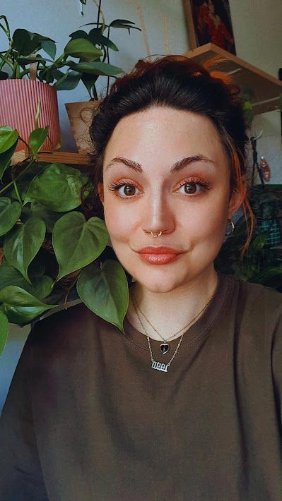

About
Hi there! My name is Nena, I'm 32 years old and I live in Rotterdam. My interest in film photography started only this year, but I've already managed to fill quite a few roles.
I started out with the Kodak M35, which is a point and shoot camera. A very easy way to get started in my opinion. You literally just point and shoot everything you want without having to worry about settings. After playing with that for a while I decided I wanted to try a slightly more advanced camera where I would have more control over how an image could turn out. Luckily my dad still had his old Nikon F301 (in the US known as Nikon N2000) with a stunning 50MM Nikor lens, which he kindly gifted to me. The images I take with this are so much crisper and look more professional.
I love shooting with both cameras because both just give a totally different feel. One more nostalgic and the other more real. Unfortunately 35mm film is a bit hard to come by at the moment and when you can get it, the prices are pretty steep! But for as long as it will be available, I will keep shooting film!
If you want to check out more of my photography, make sure to follow my Instagram
Click here to find my favourite place to buy film.